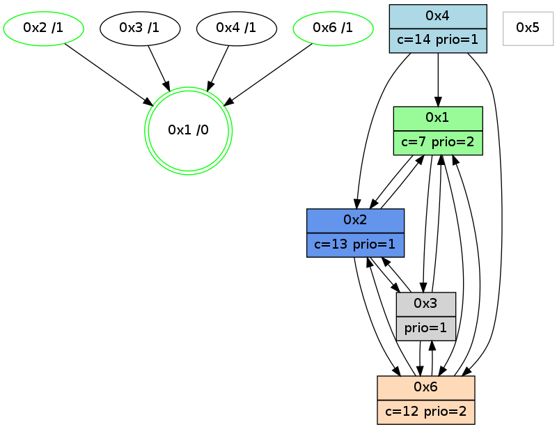

>> << IDX [start] -100 -25 -5 +0 +5 +25 +100 [990.271310091]
 Previous packets
----------------------------------------------------------------------
985.350232 beacon01(adaf) #0 coord=01,02,05,03,04,06 cycle=432.0ms assoc
-- color-indic=1 64 c6 d7
985.360193 beacon02(adaf) #0 coord=01,02,05,03,04,06 cycle=432.0ms assoc 64 97 28
985.370194 beacon05(adaf) #0 coord=01,02,05,03,04,06 cycle=432.0ms assoc 64 31 02
985.380193 beacon03(adaf) #0 coord=01,02,05,03,04,06 cycle=432.0ms assoc 64 ad 26
985.390195 beacon04(adaf) #0 coord=01,02,05,03,04,06 cycle=432.0ms assoc 64 0b 0c
985.400196 beacon06(adaf) #0 coord=01,02,05,03,04,06 cycle=432.0ms assoc 64 7f 10
985.411051 [Hello(1): seq=691 sym=2,6,3 sysInfo=hasWarning,coloring-mode-on,ColoringModeRequestCalled stat=2:6,4,4,3/6:4,10,10,2/3:2,0,2,0]
985.413591 [Color(2) seq=178 @0:0 color=13 prio=1 c=7,c,e;1,4,6,8,9,b]
985.416603 [Color(6) seq=176 @0:0 color=12 prio=2 c=7,d,e;1,4,6,8,9,b]
----------------------------------------------------------------------
985.842342 beacon01(adaf) #0 coord=01,02,05,03,04,06 cycle=432.0ms assoc
-- color-indic=1 64 02 b8
985.852305 beacon02(adaf) #0 coord=01,02,05,03,04,06 cycle=432.0ms assoc 64 53 47
985.862302 beacon05(adaf) #0 coord=01,02,05,03,04,06 cycle=432.0ms assoc 64 f5 6d
985.872303 beacon03(adaf) #0 coord=01,02,05,03,04,06 cycle=432.0ms assoc 64 69 49
985.882303 beacon04(adaf) #0 coord=01,02,05,03,04,06 cycle=432.0ms assoc 64 cf 63
985.892303 beacon06(adaf) #0 coord=01,02,05,03,04,06 cycle=432.0ms assoc 64 bb 7f
985.903957 [Hello(3): seq=790 sym=6,1,2 sysInfo=hasWarning stat=6:15,1,3,2/1:7,4,1,1/2:12,4,10,1]
985.907682 [Hello(4): seq=792 sym=2,1,6 sysInfo=hasWarning stat=2:14,9,9,1/1:13,15,6,0/6:10,10,9,3]
985.911103 [STC(1) #0.141 new-neigh,tree-change,inconsistent-stability,stable,to-color d=0]
985.914014 [Color(1) seq=218 @0:0 color=7 prio=2 c=1,4,6,8,9,b,c,d;0,2,3,5,a,e]
----------------------------------------------------------------------
986.334449 beacon01(adaf) #0 coord=01,02,05,03,04,06 cycle=432.0ms assoc
-- color-indic=1 64 7a 15
986.344410 beacon02(adaf) #0 coord=01,02,05,03,04,06 cycle=432.0ms assoc 64 2b ea
986.354412 beacon05(adaf) #0 coord=01,02,05,03,04,06 cycle=432.0ms assoc 64 8d c0
986.364411 beacon03(adaf) #0 coord=01,02,05,03,04,06 cycle=432.0ms assoc 64 11 e4
986.374412 beacon04(adaf) #0 coord=01,02,05,03,04,06 cycle=432.0ms assoc 64 b7 ce
986.384411 beacon06(adaf) #0 coord=01,02,05,03,04,06 cycle=432.0ms assoc 64 c3 d2
986.395979 [STC(4)->1 #0.141 new-neigh,tree-change,inconsistent-stability,to-color d=1]
986.397430 [STC(2)->1 #0.141 new-neigh,tree-change,inconsistent-stability,stable,to-color d=1]
986.400021 [Color(2) seq=179 @0:0 color=13 prio=1 c=7,c,e;1,4,6,8,9,b]
986.401711 [Hello(6): seq=705 sym=2,1,3 sysInfo=hasWarning stat=2:5,4,2,2/1:15,5,5,1/3:4,3,10,5]
986.404284 [Hello(1): seq=692 sym=2,6,3 sysInfo=hasWarning,coloring-mode-on,ColoringModeRequestCalled stat=2:6,5,4,3/6:4,11,10,2/3:3,0,2,0]
986.409020 [STC(6)->1 #0.141 new-neigh,tree-change,inconsistent-stability,stable,to-color d=1]
986.411296 [Color(6) seq=177 @0:0 color=12 prio=2 c=7,d,e;1,4,6,8,9,b]
----------------------------------------------------------------------
986.826557 beacon01(adaf) #0 coord=01,02,05,03,04,06 cycle=432.0ms assoc
-- color-indic=1 64 be 7a
986.836517 beacon02(adaf) #0 coord=01,02,05,03,04,06 cycle=432.0ms assoc 64 ef 85
986.846519 beacon05(adaf) #0 coord=01,02,05,03,04,06 cycle=432.0ms assoc 64 49 af
986.856517 beacon03(adaf) #0 coord=01,02,05,03,04,06 cycle=432.0ms assoc 64 d5 8b
986.866518 beacon04(adaf) #0 coord=01,02,05,03,04,06 cycle=432.0ms assoc 64 73 a1
986.876519 beacon06(adaf) #0 coord=01,02,05,03,04,06 cycle=432.0ms assoc 64 07 bd
986.888193 [Hello(4): seq=793 sym=2,1,6 sysInfo=hasWarning stat=2:14,10,10,1/1:14,0,7,0/6:11,11,10,3]
986.891920 [Hello(2): seq=1281 sym=3,6,1 sysInfo=hasWarning stat=3:10,11,7,3/6:6,9,8,1/1:3,14,15,0]
986.893759 [Color(1) seq=219 @0:0 color=7 prio=2 c=1,4,6,8,9,b,c,d;0,2,3,5,a,e]
----------------------------------------------------------------------
987.318664 beacon01(adaf) #0 coord=01,02,05,03,04,06 cycle=432.0ms assoc
-- color-indic=1 64 f2 ca
987.328625 beacon02(adaf) #0 coord=01,02,05,03,04,06 cycle=432.0ms assoc 64 a3 35
987.338626 beacon05(adaf) #0 coord=01,02,05,03,04,06 cycle=432.0ms assoc 64 05 1f
987.348627 beacon03(adaf) #0 coord=01,02,05,03,04,06 cycle=432.0ms assoc 64 99 3b
987.358627 beacon04(adaf) #0 coord=01,02,05,03,04,06 cycle=432.0ms assoc 64 3f 11
987.368627 beacon06(adaf) #0 coord=01,02,05,03,04,06 cycle=432.0ms assoc 64 4b 0d
987.381097 [Hello(1): seq=693 sym=2,6,3 sysInfo=hasWarning,coloring-mode-on,ColoringModeRequestCalled stat=2:6,5,4,3/6:4,12,11,2/3:3,0,2,0]
987.385043 [Color(2) seq=180 @0:0 color=13 prio=1 c=7,c,e;1,4,6,8,9,b]
987.387109 [Hello(6): seq=706 sym=2,1,3 sysInfo=hasWarning stat=2:6,4,2,2/1:15,6,5,1/3:5,3,11,5]
987.390143 [Color(6) seq=178 @0:0 color=12 prio=2 c=7,d,e;1,4,6,8,9,b]
----------------------------------------------------------------------
987.810773 beacon01(adaf) #0 coord=01,02,05,03,04,06 cycle=432.0ms assoc
-- color-indic=1 64 36 a5
987.820734 beacon02(adaf) #0 coord=01,02,05,03,04,06 cycle=432.0ms assoc 64 67 5a
987.830734 beacon05(adaf) #0 coord=01,02,05,03,04,06 cycle=432.0ms assoc 64 c1 70
987.840734 beacon03(adaf) #0 coord=01,02,05,03,04,06 cycle=432.0ms assoc 64 5d 54
987.850734 beacon04(adaf) #0 coord=01,02,05,03,04,06 cycle=432.0ms assoc 64 fb 7e
987.860735 beacon06(adaf) #0 coord=01,02,05,03,04,06 cycle=432.0ms assoc 64 8f 62
987.872418 [Hello(4): seq=794 sym=2,1,6 sysInfo=hasWarning stat=2:15,10,10,1/1:15,1,7,0/6:12,12,10,3]
987.874345 [Color(1) seq=220 @0:0 color=7 prio=2 c=1,4,6,8,9,b,c,d;0,2,3,5,a,e]
----------------------------------------------------------------------
988.302880 beacon01(adaf) #0 coord=01,02,05,03,04,06 cycle=432.0ms assoc
-- color-indic=1 64 7b a2
988.312842 beacon02(adaf) #0 coord=01,02,05,03,04,06 cycle=432.0ms assoc 64 2a 5d
988.322841 beacon05(adaf) #0 coord=01,02,05,03,04,06 cycle=432.0ms assoc 64 8c 77
988.332842 beacon03(adaf) #0 coord=01,02,05,03,04,06 cycle=432.0ms assoc 64 10 53
988.342843 beacon04(adaf) #0 coord=01,02,05,03,04,06 cycle=432.0ms assoc 64 b6 79
988.352844 beacon06(adaf) #0 coord=01,02,05,03,04,06 cycle=432.0ms assoc 64 c2 65
988.365263 [Hello(1): seq=694 sym=2,6,3 sysInfo=hasWarning,coloring-mode-on,ColoringModeRequestCalled stat=2:6,5,4,3/6:5,13,11,2/3:3,0,2,0]
988.367319 [STC(1) #0.142 new-neigh,tree-change,inconsistent-stability,stable,to-color d=0]
988.369269 [Color(2) seq=181 @0:0 color=13 prio=1 c=7,c,e;1,4,6,8,9,b]
988.371311 [Hello(6): seq=707 sym=2,1,3 sysInfo=hasWarning stat=2:6,4,2,2/1:15,7,5,1/3:5,3,11,5]
988.374345 [Color(6) seq=179 @0:0 color=12 prio=2 c=7,d,e;1,4,6,8,9,b]
----------------------------------------------------------------------
988.794988 beacon01(adaf) #0 coord=01,02,05,03,04,06 cycle=432.0ms assoc
-- color-indic=1 64 bf cd
988.804949 beacon02(adaf) #0 coord=01,02,05,03,04,06 cycle=432.0ms assoc 64 ee 32
988.814950 beacon05(adaf) #0 coord=01,02,05,03,04,06 cycle=432.0ms assoc 64 48 18
988.824950 beacon03(adaf) #0 coord=01,02,05,03,04,06 cycle=432.0ms assoc 64 d4 3c
988.834949 beacon04(adaf) #0 coord=01,02,05,03,04,06 cycle=432.0ms assoc 64 72 16
988.844949 beacon06(adaf) #0 coord=01,02,05,03,04,06 cycle=432.0ms assoc 64 06 0a
988.856688 [Hello(2): seq=1283 sym=3,6,1 sysInfo=hasWarning stat=3:10,11,7,3/6:8,11,8,1/1:3,0,15,0]
988.858560 [Color(1) seq=221 @0:0 color=7 prio=2 c=1,4,6,8,9,b,c,d;0,2,3,5,a,e]
988.860512 [Hello(4): seq=795 sym=2,1,6 sysInfo=hasWarning stat=2:15,11,10,1/1:0,2,8,0/6:13,13,10,3]
988.864183 [STC(4)->1 #0.142 new-neigh,tree-change,inconsistent-stability,to-color d=1]
----------------------------------------------------------------------
989.287095 beacon01(adaf) #0 coord=01,02,05,03,04,06 cycle=432.0ms assoc
-- color-indic=1 64 f3 7d
989.297056 beacon02(adaf) #0 coord=01,02,05,03,04,06 cycle=432.0ms assoc 64 a2 82
989.307056 beacon05(adaf) #0 coord=01,02,05,03,04,06 cycle=432.0ms assoc 64 04 a8
989.317057 beacon03(adaf) #0 coord=01,02,05,03,04,06 cycle=432.0ms assoc 64 98 8c
989.327057 beacon04(adaf) #0 coord=01,02,05,03,04,06 cycle=432.0ms assoc 64 3e a6
989.337058 beacon06(adaf) #0 coord=01,02,05,03,04,06 cycle=432.0ms assoc 64 4a ba
989.347913 [Hello(1): seq=695 sym=2,6,3 sysInfo=hasWarning,coloring-mode-on,ColoringModeRequestCalled stat=2:6,6,4,3/6:6,14,11,2/3:4,0,3,0]
989.350440 [Color(2) seq=182 @0:0 color=13 prio=1 c=7,c,e;1,4,6,8,9,b]
989.353461 [Color(6) seq=180 @0:0 color=12 prio=2 c=7,d,e;1,4,6,8,9,b]
----------------------------------------------------------------------
989.779203 beacon01(adaf) #0 coord=01,02,05,03,04,06 cycle=432.0ms assoc
-- color-indic=1 64 37 12
989.789164 beacon02(adaf) #0 coord=01,02,05,03,04,06 cycle=432.0ms assoc 64 66 ed
989.799164 beacon05(adaf) #0 coord=01,02,05,03,04,06 cycle=432.0ms assoc 64 c0 c7
989.809165 beacon03(adaf) #0 coord=01,02,05,03,04,06 cycle=432.0ms assoc 64 5c e3
989.819166 beacon04(adaf) #0 coord=01,02,05,03,04,06 cycle=432.0ms assoc 64 fa c9
989.829165 beacon06(adaf) #0 coord=01,02,05,03,04,06 cycle=432.0ms assoc 64 8e d5
989.840848 [Hello(4): seq=796 sym=2,1,6 sysInfo=hasWarning stat=2:15,12,10,1/1:1,2,8,0/6:13,14,10,3]
989.842760 [Color(1) seq=222 @0:0 color=7 prio=2 c=1,4,6,8,9,b,c,d;0,2,3,5,a,e]
989.844560 [Hello(2): seq=1284 sym=3,6,1 sysInfo=hasWarning stat=3:11,11,8,3/6:8,12,8,1/1:4,1,15,0]